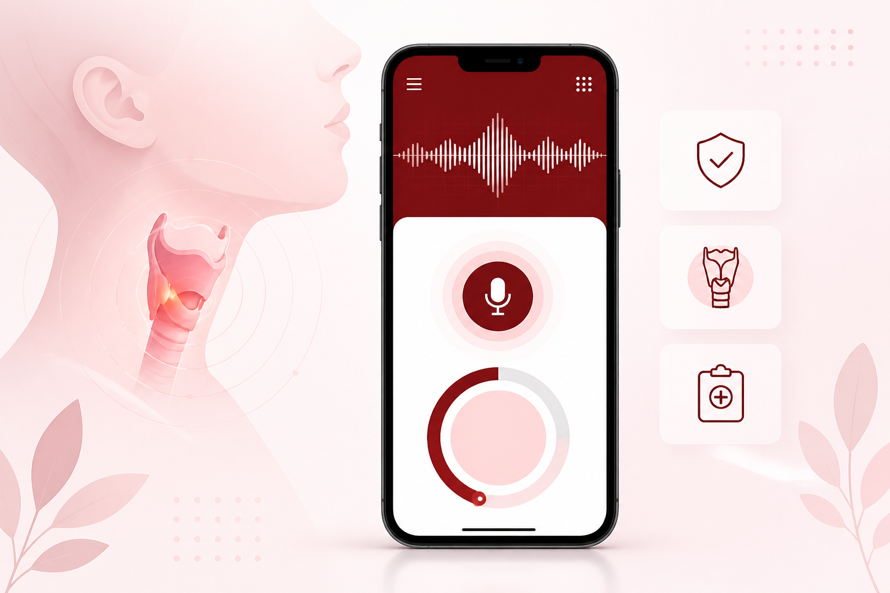

01 · Voice Analysis
Record, upload, and score voice samples
Capture audio with a live-style waveform, or upload an existing sample. Add optional clinical context such as gender, smoking, alcohol, and occupation, then run AI voice analysis for a screening score.
- Microphone recording with waveform feedback
- Audio file upload support
- Risk score dashboard (0–100)
- Clear Low / Medium / High risk bands
